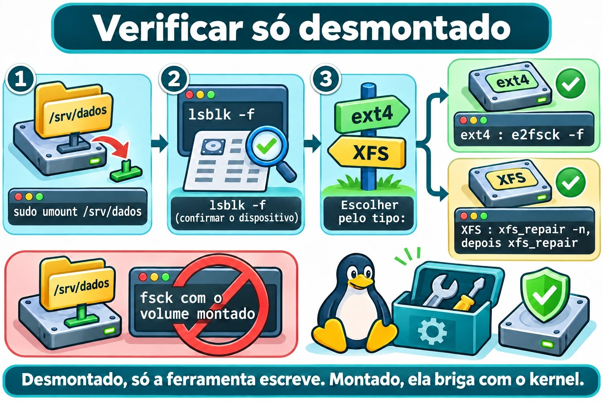

Aula 9.5 · Integridade e espaço
No Windows, você olha o Explorer, vê a barra do disco ficar vermelha e roda chkdsk quando algo estranho acontece. No Linux, as mesmas perguntas têm ferramentas separadas: df e du para espaço, fsck para consistência. Nesta aula você enche de verdade o /srv/dados, descobre por que o disco pode estar cheio sem ter arquivo, e aprende a verificar e reparar um sistema de arquivos com segurança.
Núcleo desta aula: ler
df -h,df -iedu -h -d 1; achar o que ocupa espaço; saber por que arquivo apagado pode continuar ocupando (lsof +L1); entender blocos reservados do ext4 e falta de inodes; e rodare2fsck -fexfs_repairsomente com o sistema de arquivos desmontado. O resto é aprofundamento.
| Ficha | |
|---|---|
| Módulo | M9 · Armazenamento, aula 5 de 7 |
| Quando | Semana 14 |
| Ao final | Você diagnostica disco cheio por blocos, por inodes ou por arquivo aberto, e verifica ext4 e XFS sem risco |
| Pré-requisitos | Aulas 9.1 a 9.4 (as três montagens em /srv) |
| Tempo | cerca de 2h30 |
| Snapshots | m9a5-inicio e m9a5-fim na rocky-lab e na debian-lab |
1 · Aquecimento
Responda antes de ler.
- O
dfmostra 100% de uso, mas a soma dos arquivos que você vê é pequena. O que pode explicar? - Um disco com metade do espaço livre responde "No space left on device". Como isso é possível?
- Por que não se roda
fsckem um sistema de arquivos montado?
2 · Por que importa
| O chamado | A resposta errada | O que ela causa |
|---|---|---|
| "O disco está cheio, mas não acho o que ocupa" | Apagar arquivos às cegas | Perde dados e o espaço não volta, se o arquivo estava aberto |
"Apaguei o log de 5 GB e o df não mudou" | Apagar mais coisas | O processo ainda segura o arquivo; falta reiniciar o serviço |
| "Dá erro de espaço, mas tem 40% livre" | Aumentar o disco | Os inodes acabaram, e o disco maior não resolve sozinho |
| "O servidor caiu e o disco está estranho" | fsck com tudo montado | Corrompe o que estava íntegro |
3 · Modelo mental
Um sistema de arquivos é um armazém com fichário. As prateleiras são os blocos, onde ficam os dados. As fichas são os inodes, uma por arquivo. O armazém lota se acabarem as prateleiras ou as fichas, e as duas contas são separadas. O gerente guarda uma reserva de emergência de prateleiras só para ele (os blocos reservados). E nunca se faz inventário com o armazém aberto e as pessoas movendo caixas: o
fsckexige o armazém fechado.
Disco "cheio"? Meça nesta ordem:
1. Blocos df -h Use% alto? Avail zerado?
2. Inodes df -i IUse% alto? (muitos arquivos pequenos)
3. Quem ocupa du -h -d 1 | sort -h desça pasta por pasta
4. Apagado/aberto lsof +L1 "(deleted)" ainda ocupa bloco
5. Reserva tune2fs -l Reserved block count (ext4)
Integridade, sempre desmontado:
ext4 umount -> e2fsck -f
XFS umount -> xfs_repair -n (olhar) -> xfs_repair (consertar)
Ponte Windows
| No Windows | No Linux | Onde a comparação engana |
|---|---|---|
| Barra de espaço no Explorer | df -h | O df conta por sistema de arquivos montado, não por letra |
chkdsk | e2fsck e xfs_repair | Rodam com o volume desmontado. Não existe "agendar para o próximo boot" como regra |
| Arquivo em uso: "não é possível excluir" | Linux apaga, e o dado fica até fechar | O nome some, mas o espaço só volta quando o último processo fecha |
4 · O essencial
Espaço: df e du
| Quero... | Comando |
|---|---|
| Uso por sistema de arquivos | df -h |
| Mostrar o tipo (ext4, xfs, vfat) | df -hT |
| Uso de inodes | df -i |
| Tamanho total de uma pasta | du -sh PASTA |
| Uma camada de pastas | du -h -d 1 PASTA |
| Maiores por último | du -h -d 1 PASTA | sort -h |
O -h mostra tamanhos legíveis (base 1024). -d 1 limita a um nível. O sort -h ordena 900K antes de 1G. O -x impede o du de atravessar para outros pontos de montagem.
O df lê os contadores do sistema de arquivos. O du percorre os arquivos e soma. Se discordam muito, há arquivo apagado e aberto.
Blocos reservados (ext4)
O ext4 reserva, por padrão, 5% dos blocos para o root. Um usuário comum recebe "No space left" quando só o espaço reservado resta. O df mostra isso: Avail chega a zero com Used ainda abaixo do total.
sudo tune2fs -l DISPOSITIVO | grep -i 'reserved block count'
sudo tune2fs -m 1 DISPOSITIVOtune2fs -l lista o superbloco. -m define a reserva em porcentagem. Em disco só de dados, 1% ou 0% é razoável. Na raiz, mantenha o padrão. O tune2fs não funciona em XFS.
Inodes
Cada arquivo, pasta e link usa um inode. O ext4 fixa a quantidade ao formatar (um a cada 16 KiB, aproximadamente). Milhões de arquivos minúsculos esgotam os inodes antes dos blocos. O sintoma é No space left on device com df -h mostrando espaço. Confirme com df -i: o IUse% estará em 100%. O XFS aloca inodes dinamicamente.
Arquivo apagado, mas aberto
No Linux, rm remove o nome. O dado só é liberado quando o contador de links chega a zero e nenhum processo mantém o arquivo aberto. Veja os casos:
sudo lsof +L1O lsof lista arquivos abertos. +L1 filtra os que têm menos de 1 link, ou seja, apagados. A saída traz a coluna NLINK com 0 e o nome com (deleted). O conserto correto é reiniciar ou recarregar o serviço dono do processo.

Verificar e reparar
| Sistema de arquivos | Olhar sem alterar | Reparar |
|---|---|---|
| ext4 | e2fsck -n DISP | e2fsck -f DISP |
| XFS | xfs_repair -n DISP | xfs_repair DISP |
Em todos os casos, o sistema de arquivos precisa estar desmontado. O fsck lê o disco direto, enquanto o kernel altera as estruturas na memória e grava depois. Com os dois ativos, o fsck "conserta" o que não estava quebrado, e o kernel sobrescreve o reparo: corrupção real. O -f do e2fsck força a checagem completa mesmo que o sistema de arquivos pareça limpo.
O XFS repete o journal no mount. Por isso o fsck.xfs não faz nada: a ferramenta é o xfs_repair. Se ele recusar por log sujo, monte e desmonte uma vez. O xfs_repair -L zera o log e perde alterações recentes: só quando montar é impossível.
A checagem periódica do ext4 fica no superbloco: tune2fs -c (a cada N montagens) e -i (intervalo). Vêm desligados. O sexto campo do /etc/fstab (passno) decide se o fsck roda no boot.


Rocky × Debian
| Rocky | Debian | |
|---|---|---|
lsof | sudo dnf install -y lsof | sudo apt install -y lsof |
xfs_repair | Vem com xfsprogs | sudo apt install -y xfsprogs |
e2fsck, tune2fs | Vêm com e2fsprogs | Vêm com e2fsprogs |
| Conferir pacote | rpm -q lsof xfsprogs | dpkg -s lsof xfsprogs |
| Raiz | XFS, só pelo modo de resgate | ext4, só pelo modo de resgate |
5 · Lab guiado
Você só enche o /srv/dados (1 GiB, ext4). A raiz não é tocada.
Passo 0 · Snapshots, backup e preparo. No Proxmox: qm snapshot 201 m9a5-inicio e qm snapshot 202 m9a5-inicio. Lembre: o snapshot não é backup. O backup do PBS da aula 9.1 continua sendo a proteção real. Na rocky-lab:
sudo dnf install -y lsof
rpm -q lsof xfsprogs
findmnt /srv/dados /srv/arquivo /srv/troca
sudo mkdir /srv/dados/lab95
sudo chown "$USER": /srv/dados/lab95findmnt deve mostrar as três montagens da aula 9.4. O chown entrega a pasta ao seu usuário, para sentir a reserva do root.
Passo 1 · Ler o espaço.
df -h
df -hT /srv/dados /srv/arquivo /srv/troca
df -i /srv/dados
sudo du -h -d 1 /srv | sort -hSaída esperada (valores aproximados):
Filesystem Type Size Used Avail Use% Mounted on
/dev/sdb1 ext4 974M 24K 922M 1% /srv/dados
/dev/sdb2 xfs 960M 39M 922M 4% /srv/arquivo
/dev/sdb3 vfat 511M 4.0K 511M 1% /srv/troca
Filesystem Inodes IUsed IFree IUse% Mounted on
/dev/sdb1 65536 12 65524 1% /srv/dadosPasso 2 · Encher de verdade. Confira o alvo e o nome estável da partição:
findmnt -no SOURCE,FSTYPE /srv/dados
ls -l /dev/disk/by-id/ | grep 'drive-scsi1-part1'
dd if=/dev/zero of=/srv/dados/lab95/enche1.bin bs=1M status=progress
df -h /srv/dadosO dd copia bytes de if (entrada) para of (saída). Sem count, escreve até o disco recusar. bs=1M usa blocos de 1 MiB; status=progress mostra o andamento. O erro final No space left on device é o esperado.
O df mostra Avail 0 e Use% 100%, mas ainda sobram cerca de 51 MiB: são os 5% reservados, só do root. Prove:
sudo tune2fs -l /dev/disk/by-id/scsi-0QEMU_QEMU_HARDDISK_drive-scsi1-part1 | grep -i 'reserved block count'
sudo dd if=/dev/zero of=/srv/dados/lab95/root.bin bs=1M count=10O sudo dd escreve, porque o root usa a reserva. Agora libere a reserva para o seu usuário e encha de novo:
sudo rm /srv/dados/lab95/root.bin
sudo tune2fs -m 0 /dev/disk/by-id/scsi-0QEMU_QEMU_HARDDISK_drive-scsi1-part1
df -h /srv/dados
dd if=/dev/zero of=/srv/dados/lab95/enche2.bin bs=1M status=progress
du -h -d 1 /srv/dados | sort -hCom -m 0, o Avail sobe uns 51 MiB e o segundo dd enche o restante. O tune2fs ajusta a reserva com o sistema montado.
Passo 3 · Verificar o ext4. Libere espaço, desmonte e cheque o dispositivo certo:
rm /srv/dados/lab95/enche1.bin /srv/dados/lab95/enche2.bin
sudo tune2fs -m 5 /dev/disk/by-id/scsi-0QEMU_QEMU_HARDDISK_drive-scsi1-part1
sudo umount /srv/dados
lsblk -f /dev/disk/by-id/scsi-0QEMU_QEMU_HARDDISK_drive-scsi1
sudo e2fsck -f /dev/disk/by-id/scsi-0QEMU_QEMU_HARDDISK_drive-scsi1-part1
echo $?O -m 5 devolve a reserva padrão. O lsblk -f confirma que o DADOS está sem ponto de montagem. A saída do e2fsck:
e2fsck 1.46.5 (30-Dec-2021)
Pass 1: Checking inodes, blocks, and sizes
Pass 2: Checking directory structure
Pass 3: Checking directory connectivity
Pass 4: Checking reference counts
Pass 5: Checking group summary information
DADOS: 13/65536 files (0.0% non-contiguous), 14123/262144 blocks
0A versão na primeira linha muda de uma distribuição para outra. O código de saída 0 significa sem erros; 1, que houve correção. Agora veja o que a checagem automática guarda e volte ao padrão:
sudo tune2fs -l /dev/disk/by-id/scsi-0QEMU_QEMU_HARDDISK_drive-scsi1-part1 | grep -Ei 'mount count|check interval|last checked'
sudo tune2fs -c 30 -i 1m /dev/disk/by-id/scsi-0QEMU_QEMU_HARDDISK_drive-scsi1-part1
sudo tune2fs -c 0 -i 0 /dev/disk/by-id/scsi-0QEMU_QEMU_HARDDISK_drive-scsi1-part1
sudo mount /srv/dados-c 30 pede checagem a cada 30 montagens, e -i 1m a cada um mês. -c 0 -i 0 desliga os dois. O mount /srv/dados usa o fstab da aula 9.4.
Passo 4 · Verificar o XFS.
sudo umount /srv/arquivo
sudo xfs_repair -n /dev/disk/by-id/scsi-0QEMU_QEMU_HARDDISK_drive-scsi1-part2
sudo xfs_repair /dev/disk/by-id/scsi-0QEMU_QEMU_HARDDISK_drive-scsi1-part2
sudo mount /srv/arquivoO -n é o modo de olhar: não altera nada. A saída termina assim:
Phase 7 - verify link counts...
No modify flag set, skipping filesystem flush and exiting.O reparo de verdade termina com done. Se o umount disser target is busy, veja a Quebra 3.
Passo 5 · debian-lab. Instale lsof e xfsprogs (dpkg -s confirma), e repita os passos 1, 2 e 3. Compare as saídas.
Decida 1
A raiz / da rocky-lab (XFS) está em 97%. Primeiro passo?
A) sudo rm -rf /var/log/*. B) sudo du -xh -d 1 / | sort -h, e descer pela pasta maior. C) tune2fs -m 0 na raiz, para ganhar espaço.
Marque uma opção antes.
| Se você marcou | Resultado | Por quê |
|---|---|---|
| A | Perigoso | Apaga sem saber o que ocupa, e some o histórico |
| B | Certo | Mede com -x e acha o alvo antes de agir |
| C | Não funciona | tune2fs é do ext4, e a raiz da Rocky é XFS |
Decida 2
O ext4 de /srv/dados ficou com erros depois de uma queda de energia. Qual a sequência certa?
A) e2fsck -f com o disco montado, para não parar o serviço. B) Desmontar, e2fsck -f no dispositivo e montar de novo. C) xfs_repair no dispositivo.
Marque uma opção antes.
| Se você marcou | Resultado | Por quê |
|---|---|---|
| A | Risco de corromper | O kernel e o e2fsck mexem juntos nas mesmas estruturas |
| B | Certo | Com ele desmontado, o e2fsck é o único que escreve |
| C | Ferramenta errada | xfs_repair não entende ext4 |
6 · Quebre e conserte
Faça na rocky-lab, no /srv/dados.
Quebra 1 · Sem espaço, com espaço
mkdir /srv/dados/lab95/inodes
seq 1 70000 | sed 's|^|/srv/dados/lab95/inodes/f|' | xargs touch 2>&1 | tail -n 2
echo teste > /srv/dados/lab95/novo.txt
df -h /srv/dados
df -i /srv/dadosSintoma: touch: cannot touch ...: No space left on device, e o echo também falha, com quase 900 MiB livres no df -h.
Investigação: df -i mostra IUse% 100%. O ls /srv/dados/lab95/inodes | wc -l conta cerca de 65 mil arquivos.
Causa: acabaram os inodes. O disco tem espaço, mas não tem fichas.
Conserto: apague os arquivos pequenos. Use find, com o caminho escrito por inteiro:
find /srv/dados/lab95/inodes -type f -delete
df -i /srv/dadosNa vida real, ache a aplicação que cria tantos arquivos (cache, sessões, filas).
Quebra 2 · Apaguei e o espaço não volta
dd if=/dev/zero of=/srv/dados/lab95/grande.bin bs=1M count=400
tail -f /srv/dados/lab95/grande.bin > /dev/null &
rm /srv/dados/lab95/grande.bin
df -h /srv/dados
du -sh /srv/dadosSintoma: o df ainda mostra 400 MiB usados, mas o du mostra quase nada.
Investigação: sudo lsof +L1. A saída é parecida com:
COMMAND PID USER FD TYPE DEVICE SIZE/OFF NLINK NODE NAME
tail 2417 student 3r REG 8,17 419430400 0 12 /srv/dados/lab95/grande.bin (deleted)Causa: o tail ainda mantém o arquivo aberto, com NLINK 0. O nome sumiu, o dado não.
Conserto: encerre o processo, com o PID que o lsof mostrou (ou kill %1, na mesma sessão):
kill %1
df -h /srv/dadosO espaço volta na hora. Num serviço, o conserto é sudo systemctl restart SERVICO.
Quebra 3 · Não consigo desmontar
cd /srv/arquivo
sudo umount /srv/arquivoSintoma: umount: /srv/arquivo: target is busy.
Investigação: sudo lsof +f -- /srv/arquivo lista o bash com cwd em /srv/arquivo. findmnt /srv/arquivo confirma que ainda está montado.
Causa: seu próprio shell está dentro da pasta. Um ponto de montagem só se desmonta sem uso.
Conserto: saia da pasta e tente de novo.
cd ~
sudo umount /srv/arquivo
sudo mount /srv/arquivoEvite umount -l e -f: escondem o uso, não o resolvem.
Limpeza
rm -f /srv/dados/lab95/novo.txt
rmdir /srv/dados/lab95/inodes /srv/dados/lab95
sudo tune2fs -m 5 /dev/disk/by-id/scsi-0QEMU_QEMU_HARDDISK_drive-scsi1-part1
ls -la /srv/dados
findmnt /srv/dados /srv/arquivo /srv/trocaO rm -f não reclama se o novo.txt nem chegou a existir (o echo da Quebra 1 falhou). O /srv/dados deve mostrar só lost+found, e as três montagens voltam ativas. Na debian-lab, faça o mesmo.
7 · Armadilhas
| Armadilha | O que acontece | Como evitar |
|---|---|---|
fsck em sistema montado | Corrompe | umount antes, sempre |
| Apagar log aberto | O espaço não volta | lsof +L1 e reiniciar o serviço |
Olhar só df -h | Perde o problema de inodes | df -i junto |
du sem -x na raiz | Soma outros discos e /proc | du -xh -d 1 / |
tune2fs -m 0 na raiz | Tira a folga do root | Só em disco de dados |
8 · Quiz
Responda sem olhar. O gabarito está no fim da aula.
- Qual a diferença entre o que o
dfe odumedem? - Que dois comandos mostram "tem espaço" e "acabaram os inodes", respectivamente?
- O que são blocos reservados e quem pode usá-los?
- Que comando lista arquivos apagados que ainda estão abertos?
- Por que o
fsckexige o sistema desmontado?
9 · Cola
Para saber de cor:
| Quero... | Comando |
|---|---|
| Espaço | df -h |
| Inodes | df -i |
| Quem ocupa | du -h -d 1 PASTA | sort -h |
| Apagado e aberto | sudo lsof +L1 |
| Reparar ext4 | umount, depois e2fsck -f DISP |
| Reparar XFS | umount, depois xfs_repair -n DISP, depois xfs_repair DISP |
Para consultar:
| Quero... | Comando |
|---|---|
| Tipo do sistema | df -hT |
| Reserva do ext4 | sudo tune2fs -l DISP | grep -i reserved |
| Mudar reserva | sudo tune2fs -m N DISP |
| Quem usa o ponto | sudo lsof +f -- PONTO |
Flashcards:
dfedudiscordam → arquivo apagado e aberto.- Espaço livre e erro de gravação → inodes (
df -i). - Reserva do ext4 → 5%, só do root.
fsck→ só desmontado.
10 · Checklist e fechamento
- [ ] Leio
df -h,df -iedf -hT - [ ] Acho o que ocupa com
du -h -d 1 | sort -h - [ ] Explico a reserva de 5% do ext4
- [ ] Rodo
e2fsck -fexfs_repairsó com o sistema desmontado - [ ] O
/srv/dadosvoltou vazio e as três montagens estão ativas
Último exercício, sem olhar a aula: na debian-lab, encha o /srv/dados com um arquivo, apague o arquivo com um processo ainda lendo, mostre a diferença entre df e du, ache o processo com lsof +L1, libere o espaço, desmonte e rode e2fsck -f no dispositivo pelo by-id. Depois limpe.
Snapshot de fim (no Proxmox):
qm snapshot 201 m9a5-fim
qm snapshot 202 m9a5-fim11 · Na vida real
Missão, só leitura. Num servidor Linux que você administre (ou com autorização), rode apenas:
df -hT -x tmpfs -x devtmpfs
df -i -x tmpfs -x devtmpfs
sudo du -xh -d 1 / 2>/dev/null | sort -h | tail -n 8
sudo lsof +L1 2>/dev/null | head -n 20
sudo tune2fs -l /dev/DISPOSITIVO | grep -Ei 'reserved block count|mount count|check interval'Troque DISPOSITIVO por um ext4 do df -hT (sem ext4, pule a linha).
Perguntas para responder:
- Algum sistema de arquivos acima de 80% de blocos ou de inodes?
- Qual a maior pasta na raiz?
- Há arquivos apagados ainda abertos? De qual processo?
Diário: anote o que merece atenção. Não altere nada, não rode fsck e não apague arquivos.
Amanhã, sem olhar: escreva os cinco passos de medição de um disco cheio.
12 · Aprofundar quando quiser
man df,man du,man lsof.man e2fsck,man tune2fs,man xfs_repair: códigos de saída, opções de reserva e fases do reparo.- Red Hat Enterprise Linux, documentação "Managing file systems": verificar e reparar XFS e ext4.
- Wiki do Debian e util-linux: ext4,
findmnt,lsblk. - kernel.org, documentação de ext4 e XFS: formato do superbloco, journal e inodes.
DeepTutor (http://10.1.0.149:3782, KB "Curso Linux Sysadmin"):
!feynman por que um arquivo apagado continua ocupando espaço!quiz Aula 9.5, 5 perguntas sobre df, du e fsck
Gabarito comentado
Aquecimento
- Arquivo apagado e ainda aberto por um processo, ou espaço fora do alcance do
du(outro ponto de montagem sobre a pasta). - Os inodes acabaram. O
df -imostra. - Porque o kernel altera as estruturas na memória enquanto o
fsckas lê no disco; o reparo pode corromper um volume íntegro.
Quiz
- O
dflê os contadores do sistema de arquivos (blocos usados e livres). Odupercorre os arquivos visíveis e soma o que ocupam. df -hpara blocos, edf -ipara inodes.- Cerca de 5% dos blocos do ext4, que só o root pode usar. Evita que usuários comuns travem o sistema.
sudo lsof +L1.- Para que só uma parte escreva nas estruturas. Montado, o kernel e o
fsckdisputariam os mesmos dados.